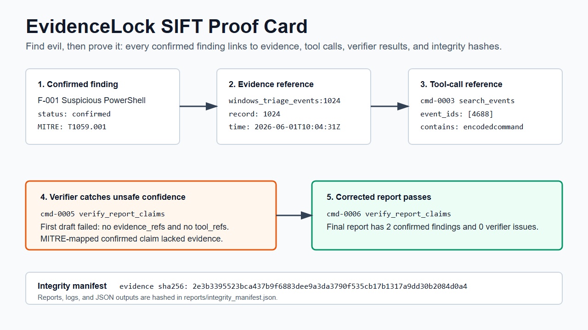
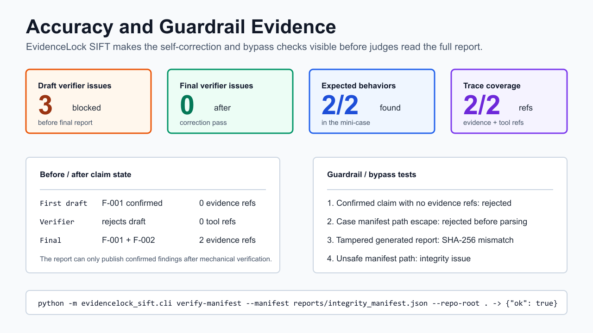

FIND EVIL judge hub
EvidenceLock SIFT is a verifier-first MCP-style boundary for Protocol SIFT triage.
The demo proves a narrow, auditable DFIR loop: an unsupported confirmed claim fails, the agent corrects it with evidence and tool-call IDs, and published reports are checked against a SHA-256 integrity manifest.
Proof Trace

Accuracy Summary

Two-Minute Review
- Watch the embedded demo.
- Open the judge pack.
- Open the 5-slide judge deck.
- Scan the judging criteria scorecard.
- Run the smoke test.
- Read the before/after claim table.
- Check the fail-closed negative control.
- Read the SIFT compatibility runbook.
- Open the annotated agent trace.
- Inspect the execution log.
- Verify the integrity manifest.
Criteria Fit
EvidenceLock maps directly to autonomous execution quality, IR accuracy, depth, constraint implementation, audit trail quality, and usability.
Fail-Closed Control
A negative-control mini-case proves that unsupported draft `F-001` downgrades to `unresolved` instead of becoming a false positive, with no evidence refs or tool refs.
Smoke-Test Proof
The smoke test only returns ok: true after the unsafe draft is rejected, the final verifier has zero issues, the manifest verifies, and both confirmed findings have exact proof traces.
F-001:windows_triage_events:1024->cmd-0003 search_events.F-002:windows_triage_events:2048->cmd-0004 search_events.negative_control_downgrades_to_unresolved: trueandnegative_manifest_ok: true.
Reproduce Locally
Clone the repo and run the verifier. The smoke test prints a `proof_trace` that locks each confirmed finding to its evidence ID and tool-call ID.
git clone https://github.com/OOYXLOO/evidencelock-sift
cd evidencelock-sift
$env:PYTHONPATH="src"
python -m unittest discover -s tests -v
python tools/judge_smoke_test.py
python -m evidencelock_sift.cli verify-manifest --manifest reports/integrity_manifest.json --repo-root .
Honest Boundary
This package demonstrates a normalized Windows EVTX-style vertical slice with verifier correction and hash checks.
It does not claim live SIFT workstation execution, full-disk processing, real victim data, or automated endpoint isolation.
Core Artifacts
Architecture
Typed tools and verifier gates are the control boundary.
Architecture notes | MCP-style tool schema | SIFT runbook | Presentation deck
Benchmark Path
The current mini-case is deliberately small and reproducible. The public-data extension path is documented for EVTX-ATTACK-SAMPLES, NIST CFReDS, and Digital Corpora-style evaluations.